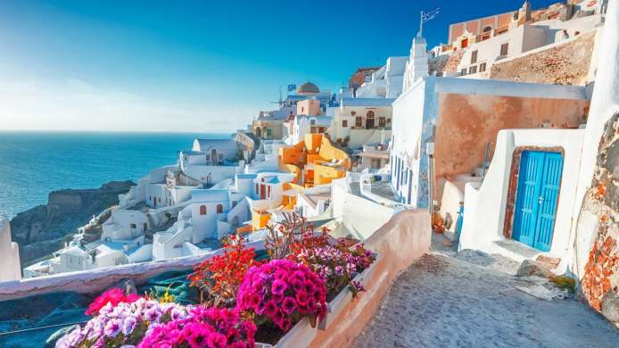
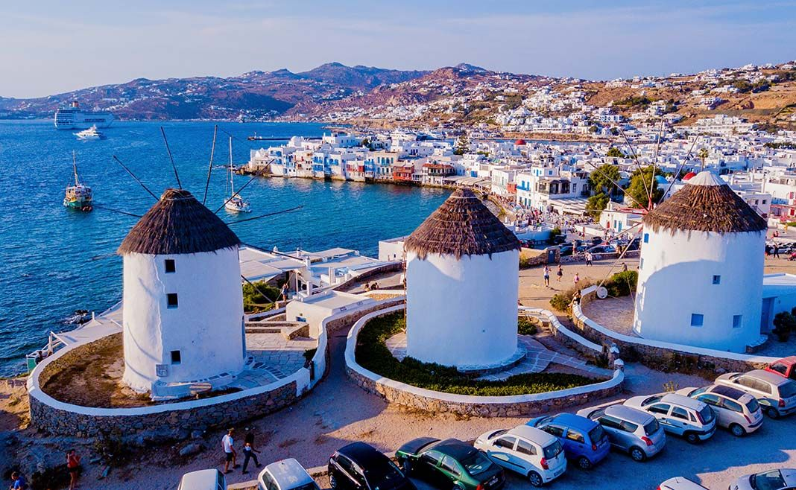
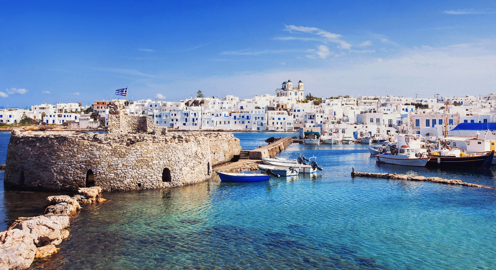
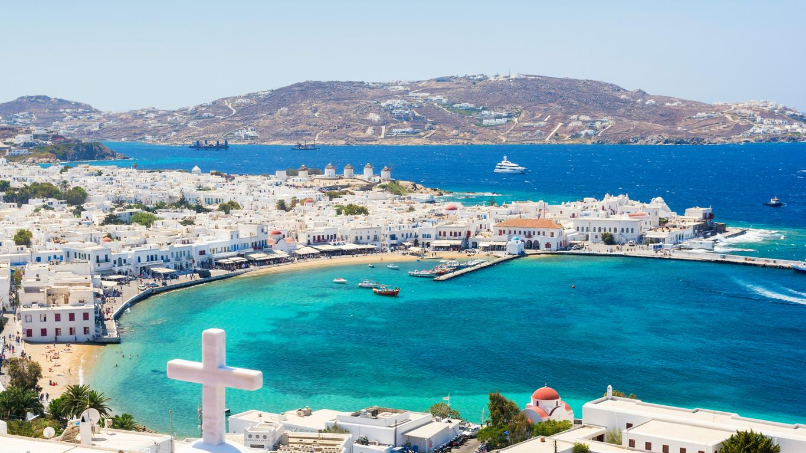
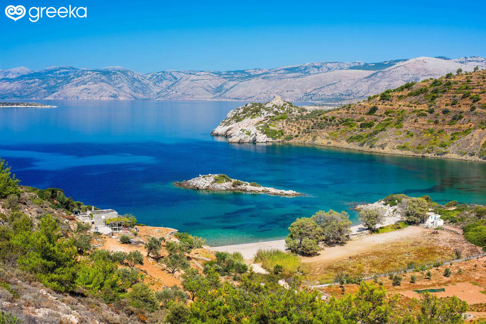

The Islands
Santorini
One of the most well know islands in Greece, Santorini is in the middle of the Aegean sea. It is very touristy as it is know buy the whole world, but it is still rated as one of the best places to visit in Greece, with its white houses and turquoise beaches.
Mykonos
As popular as Santorini, Mykonos is also a very touristy island, part of the Cyclades (a group of Greek islands in the Aegean sea). If you have the money, it is a great place to go to go to the beach during the day, then go party during the night.
Paros
Known for its marble quarries during the Antiquity, some of the masterpieces of ancient Greek sculpture were made with 'Parian marble'.If you visit this island, you will come across typical villages with idyllic nature, and crystal-clear beaches.
Naxos
Naxos is the largest island of the Cyclades island group. It is large enough to need a vehicle to get around it. It dominated commerce in the Cyclades during the 8th and 7th centuries BC.
Chios
Not part of the Cyclades this time, Chios is a hidden treasure in the Aegean, waiting to be discovered. It is the fifth largest Greek island, with a coastline of 213 kilometers. It is a mountainous island, with picturesque landscapes.